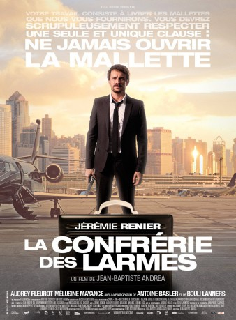
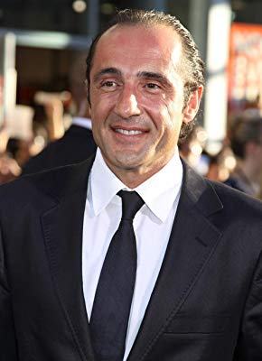

#1455 Brotherhood of Tears
 
 IMDB-Wertung: 5.7 / 10
IMDB-Wertung: 5.7 / 10  Metascore: 0
Metascore: 0 
Nuanced thriller. Renier is Gabriel Chevalier, an ex-cop whose personal life has taken a nosedive. He's a gambler, an alcoholic, a widower and single-parent to a rebellious teenage daughter. Unable to hold down regular work, he takes up the dubious offer of a job which involves sitting in an empty office waiting for the phone to ring. When it does, Chevalier is told to deliver a black briefcase to a specific address. One final instruction, he must never, ever, look inside the briefcase.
Jahr: 2013
Dauer: 95 Minuten
FSK: 12
Land: Belgien Studio: EuroVideoTonspuren:
Untertitel:
Auflösung: 1080p (1920x1040) Größe: 4761 MB
Genre: Thriller
Regisseur: Jean-Baptiste Andrea
Drehbuch: Jean-Baptiste Andrea, Gael Malry
Soundtrack: Laurent Perez Del Mar
Darsteller:
 Jérémie Renier als Gabriel Chevalier
Jérémie Renier als Gabriel Chevalier Audrey Fleurot als Claire Foczensky
Audrey Fleurot als Claire Foczensky- Mélusine Mayance als Juliette Chevalier
 Bouli Lanners als Le Hibou
Bouli Lanners als Le Hibou Vicky Krieps als La femme rousse
Vicky Krieps als La femme rousse- Astrid Whettnall als La femme
- Jean-François Wolff als L'obèse
- Antoine Basler als Matthias le Gitan
- Fabrice Michel als Commissaire Brochard
- Denis Jousselin als Frédéric
-  Bruno Ricci als Stéphane
 Affif Ben Badra als Omar
Affif Ben Badra als Omar- Luc Feit als Lydman
- Marco Lorenzini als Reno
- Thomas Morreal als Momo
- Francesca Faiella als Hôtesse
- Olivier Bony als Chauffeur Bruges
- Philippe Van Kessel als L'homme aux verres
- Valérie Dashwood als La compagne de Marco
- Thomas Coumans als Professeur piscine
- Cécile Vangrieken als Elise Brochard
- Gilles Soeder als Le prêteur sur gages
- Jean-Jacques Ruchot als L'aveugle
- Mustapha Souaidi als L'enchérisseur marocain
- Gilbert Johnston als L'enchérisseur anglais
- Sandrine Blancke als La prisonnière
- Mathieu Rutten als Membre du GIGN
- Ronan Charadia als Membre du GIGN
- Armel Cessa als Membre du GIGN
- Tony Augé als Membre du GIGN
- Marc Pallud als Membre du GIGN
- François Ledreux als Membre du GIGN
- Didier Déhent als Membre du GIGN
- Jonas Dinal als Membre du GIGN
- Ali Pinar als Traducteur turc
- Mehmet Muhammet Arslan als Policier turc
- Erdogan Bilen als Policier turc
- Sedat Payas als Policier turc
- Zehra Perlaku als Femme dans la citerne
Datei: X:\2013(A-F)\Brotherhood of Tears (2013, FSK, 1920x1040).mkv seit 07.07.2015
Festplatte: HD 2012(N-Z)-2013(A-H)
 Es gibt insgesamt 127 Filme in der Gruppe '2013(A-F)'
Es gibt insgesamt 127 Filme in der Gruppe '2013(A-F)'